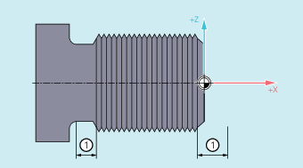

Mit den Adressen DITS und DITE kann im Teileprogramm der Einlauf- und Auslaufweg des Gewindes vorgegeben werden.
Die Gewindeachse wird innerhalb des vorgegebenen Wegs beschleunigt bzw. gebremst.
① | Ein- bzw. Auslaufweg, je nach Bearbeitungsrichtung |
Durch den Bund am Gewindeeinlauf ist wenig Platz für die Werkzeug-Startrampe.
Diese muss deshalb über DITS kürzer vorgegeben werden.
Durch den Bund am Gewindeauslauf ist wenig Platz für die Werkzeug-Bremsrampe, wodurch Kollisionsgefahr zwischen Werkstück und Schneide besteht. Die Bremsrampe kann über DITE kürzer vorgegeben werden. Wegen der Trägheit der Mechanik kann es dennoch zur Kollision kommen.
Abhilfe: Gewinde kürzer programmieren, Spindeldrehzahl reduzieren.
| Hinweis |
|
Der programmierte Einlauf- und Auslaufweg wirkt auf die Bahn ausschließlich beschleunigungssteigernd. Wird einer der beiden Wege größer vorgegeben, als er für die Gewindeachse mit aktiver Beschleunigung benötigt wird, wird die Gewindeachse mit maximaler Beschleunigung beschleunigt bzw. gebremst.
| Gewinde-Einlaufweg festlegen |
| Gewinde-Auslaufweg festlegen |
| Unter Der programmierte Ein-/Auslaufweg wird entsprechend der aktuellen Maßeinstellung (Inch, metrisch) behandelt. |
| Programmcode | Kommentar |
|---|---|
| ... | |
| N40 G90 G0 Z100 X10 SOFT M3 S500 | |
| N50 G33 Z50 K5 SF=180 DITS=1 DITE=3 | ; Überschleifbeginn bei Z=53. |
| N60 G0 X20 |
Siehe auch:
Gewindeschneiden mit konstanter Steigung (G33, SF)